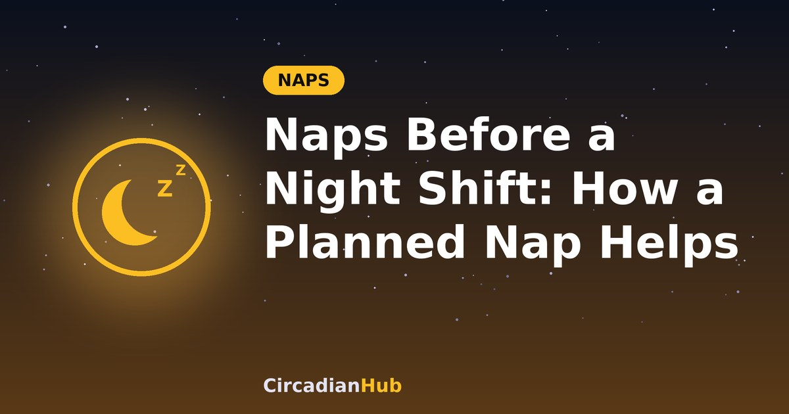

Naps Before a Night Shift: How a Planned Nap Helps You Stay Alert

Picture a 19:00 to 07:00 shift. If you wake at 09:00 and carry on as normal, you will have been awake for 22 hours by the time you finish, and the worst of the tiredness will arrive between about 03:00 and 06:00, exactly when your body clock is telling you to be asleep. A planned nap before the shift is one of the simplest ways to soften that dip. This guide explains how a pre-shift nap works, what the research shows, how long and when to nap, and how to fit it into your day.
Why a pre-shift nap works
Two forces decide how alert you feel. The first is sleep pressure, which builds the longer you are awake. The second is your body clock, which makes you more alert by day and sleepier at night. On a night shift the two pull in the same direction in the small hours: your sleep pressure is high after a long day and your body clock is at its low point.
A nap cannot move your body clock, but it can lower your sleep pressure. Starting the shift with less pressure built up means you have further to fall before you reach the point of real danger. Sleep researchers call a nap taken before a night shift a prophylactic nap, meaning a nap taken to prevent tiredness before it starts, rather than to repair it afterwards. Our article on how 90-minute sleep cycles work explains what happens inside a longer nap.
What does the research say?
There is a decent body of evidence, mostly from small studies, that a nap before a night shift helps.
- US government occupational health guidance (NIOSH) summarises several studies in nurses and in simulated night shifts. In these studies, a nap of about 1.5 to 3 hours in the afternoon or early evening was followed by better alertness during the night than no nap.
- A 2006 paper in the journal Sleep by Paula Schweitzer and colleagues tested evening naps and caffeine in both a laboratory and real shift workers. In the lab, napping, caffeine and the two together all improved alertness and performance, with the combination doing best. In the field study, the nap plus caffeine improved reaction-time performance and reduced sleepiness.
The benefits are real but modest. Reports on the field study described the effect in real shift workers as modest, and alertness did not keep improving over successive nights. A nap helps, but it does not make a night shift easy. Treat it as one tool alongside light, caffeine timing and a proper daytime sleep. Our night shift sleep schedule shows how they fit together.
When a pre-shift nap matters most
| Situation | How much a nap helps |
|---|---|
| First night of a run after days off or day shifts | A great deal. You have been awake since the morning and have had no daytime sleep to draw on. |
| You slept less than about six hours after the last shift | A lot. A longer nap helps to reduce the shortfall. |
| Night two or three, having had a full anchor sleep | Optional. A 20-minute nap is often enough. |
| You slept well and feel alert | Probably not needed. Save the time. |
| Rotating from days to nights quickly | Very useful. See our rotating shift work guide. |
How long should the nap be?
For a pre-shift nap, longer is generally better than the 20-minute power nap that suits a lunch break, since you are trying to lower sleep pressure and not just get a quick lift. The trade-off is waking up groggy, which is why timing matters. Our guide to the best nap length explains the stages in more detail.
| Nap length | Best for | Notes |
|---|---|---|
| 20 minutes | Short on time, or slept well already | Light sleep only, so you wake easily with little grogginess. |
| 90 minutes | The standard choice, especially on the first night | One full sleep cycle, so waking is usually easier than after 45 to 60 minutes. |
| 2 to 3 hours | Very short of sleep, or the first night of a run | Studies used naps this long. Allow extra time to wake properly. |
Avoid a nap of around 30 to 60 minutes if you can, because you are likely to wake from deep sleep and feel foggy for a while.
When should you nap?
Aim to finish the nap at least an hour before you have to leave for work, and never less than 45 minutes. Sleep inertia, the grogginess after waking, can last 15 to 30 minutes or more, and you need it to clear before you drive or start safety-critical work. For a 19:00 start, with a 45-minute commute, that means waking by about 17:15 at the latest.
Early to mid afternoon is often the easiest time to fall asleep, because it matches the natural dip in alertness after lunch. A nap starting around 14:30 to 15:30 works well for an evening start. A nap too late in the evening can make it hard to wake up, and a nap too early may not help much by the small hours.
A sample plan for the first night
This example is for a 19:00 to 07:00 shift on the first night after days off.
| Time | What to do |
|---|---|
| Night before | Go to bed a couple of hours later than usual and sleep in a little, waking around 09:30 |
| 09:30 | Get up, get daylight and move around |
| 13:00 | Light lunch. Avoid caffeine from late morning so it does not get in the way of the nap |
| 14:45 | Darken the room and lie down |
| 15:00 to 16:30 | Nap for 90 minutes, with an alarm |
| 16:30 | Wake, open the curtains or go outside, drink water and have a shower |
| 17:15 | Main meal before the shift |
| 18:15 | Leave for work, at least 1 hour 45 minutes after waking |
| 19:00 | Start. If you use caffeine, have it now |
| About 01:00 | A 20-minute nap on your break, if your workplace allows |
| 07:00 to 08:30 | Finish, travel home in sunglasses, wind down and go to bed |
On later nights in the run, once you are sleeping in a regular daytime block, your plan will look more like the one in our worked 12-hour example. The Shift Work Sleep Calculator can work out sleep windows from your own shift times.
Making the nap work
- Make the room dark and cool. Afternoon light makes it harder to sleep. Use blackout curtains or an eye mask, and keep the room on the cool side. See our guide to sleeping during the day.
- Lie down even if you cannot sleep. Resting with your eyes closed for 20 minutes still helps some, so do not get frustrated.
- Set an alarm and silence everything else. Put your phone on do not disturb, with only the alarm allowed.
- Avoid a heavy meal just before. A light snack is fine. A large meal can make it harder to settle.
- Skip alcohol. It may make you drowsy, but it fragments sleep.
- Keep the routine the same. A regular pre-nap ritual, like a short wind-down and the same pillow, helps you fall asleep on cue.
Combining a nap with caffeine
The research above suggests that a nap and caffeine work better together than either alone. The usual pattern is to nap first and take caffeine at the start of the shift, once the nap is over, and not before the nap. If you are short of time, a coffee nap is another option: drink the coffee and take a 15 to 20 minute nap straight away, so the caffeine starts to work as you wake. See our coffee nap hack.
Keep the last caffeine early enough not to spoil your daytime sleep. For an 08:30 bedtime, that means stopping around 02:00, as explained in our article on how long caffeine stays in your system.
Waking up properly
You want to be fully alert by the time you drive or start work, so plan the wake-up.
- Get bright light straight away, by opening the curtains, going outside or turning on bright lights.
- Drink some water and move around.
- Have a shower or wash your face.
- Eat a proper meal before the shift.
- Give it time before you drive. If you still feel heavy, delay leaving or get a lift.
If grogginess is a recurring problem, our articles on waking mid-cycle and how to wake up feeling refreshed explain what causes it and what helps.
Napping during the shift
If your workplace permits it, a short nap of about 20 minutes on a break can help you through the small hours. Set an alarm, find a safe and quiet spot and, if possible, tell a colleague. Allow at least 15 to 30 minutes to wake before doing anything safety-critical. Not every employer allows sleep at work, so check your policy, and do not nap in a vehicle or place where it is unsafe.
Driving home after the shift
A nap before the shift does not protect you on the drive home at 07:30. Driving after a night shift is risky, and drowsiness can strike without warning. If you feel sleepy, pull over somewhere safe and take a short nap, or use another way to get home.
What a nap cannot do
A nap does not replace proper sleep. If you rely on naps because your main sleep is short or broken, you are building up debt. Our article on sleep debt explains why catching up takes time. If you are constantly exhausted, have trouble sleeping at any time of day, or have close calls on the road or at work, read about shift work sleep disorder and speak to a doctor.
Common problems and fixes
| Problem | What to try |
|---|---|
| I cannot fall asleep in the afternoon | Rest for 20 minutes anyway, darken the room, wind down and stay active earlier in the day |
| I wake up groggy and stay that way | Finish the nap earlier, get bright light at once and allow more time before leaving |
| The nap makes me too sleepy to get to work | Try 20 or 90 minutes, not 30 to 60, and set a firm alarm |
| I slept through the alarm | Use two alarms, one across the room, and ask someone to check on you |
| The nap delays my sleep after the shift | Keep the nap to about 90 minutes and keep your post-shift routine the same |
Frequently asked questions
How long before the shift should I nap?
Finish at least an hour before you leave, and always at least 45 minutes. For a 19:00 shift, that usually means a nap between about 14:30 and 17:00.
Is 90 minutes or 20 minutes better?
Ninety minutes usually does more to reduce sleep pressure, and is the better choice on the first night. Twenty minutes is fine if you are short of time or have slept well.
Does the nap count as part of my sleep?
Yes, it adds to your total, but it is not a substitute for a full anchor sleep after the shift.
Should I nap if I work evenings or am on call?
The same idea applies. If you might be woken at night or have to work late, a nap earlier in the day can reduce the impact. Keep it short enough not to affect your night sleep.
Can I use melatonin to help me nap?
Ask a doctor or pharmacist first. Timing and dose matter, and it is not right for everyone.
Summary
- A nap before a night shift lowers sleep pressure, so you start with a smaller deficit and may feel less tired in the small hours.
- Studies in shift workers and simulated shifts support pre-shift naps, especially combined with caffeine, though the effect is modest.
- Choose 20 minutes if you are short of time, or about 90 minutes for the first night or when you have slept little.
- Finish at least an hour before you leave, never less than 45 minutes.
- Take caffeine after the nap, at the start of the shift, and stop about six hours before you plan to sleep.
- A nap is a helper, not a replacement for proper daytime sleep. Persistent exhaustion deserves a conversation with a doctor.
Work out when to wake from a nap of any length with our Nap Calculator.
Sources and further reading
- NIGMS (NIH): Circadian Rhythms fact sheet
- CDC/NIOSH: How Shift Work and Long Work Hours Increase Health and Safety Risks
Last updated: 1 October 2026. Links are general background reading from public-health organisations. How we write and update our guides.
Medical disclaimer: This article is for general information only and is not medical advice. If you have persistent sleep problems or excessive daytime sleepiness, speak with a doctor or sleep specialist. Never drive or operate machinery when drowsy.